สไลด์ชุดนี้ (20 หน้า) เป็น บทสรุปแนวคิดหลักของ Chapter 1 (Computer Networking: A Top-Down Approach) ในรูปแบบ "พิมพ์เขียว" ภาษาไทย
ครอบคลุม end systems, protocols, access networks, circuit vs packet switching, โครงสร้าง backbone, delay 4 ประเภท, throughput, queueing/loss, 5 layers, encapsulation, การแบ่งแพ็กเก็ต และภัยคุกคาม
จุดเด่นคือมี โจทย์คำนวณ delay พร้อมวิธีทำ 3 ข้อ — ควรฝึกทำให้คล่อง เพราะเป็นแนวข้อสอบ
ถ้าต้องการรายละเอียดเต็ม ดู สรุป Chapter 1
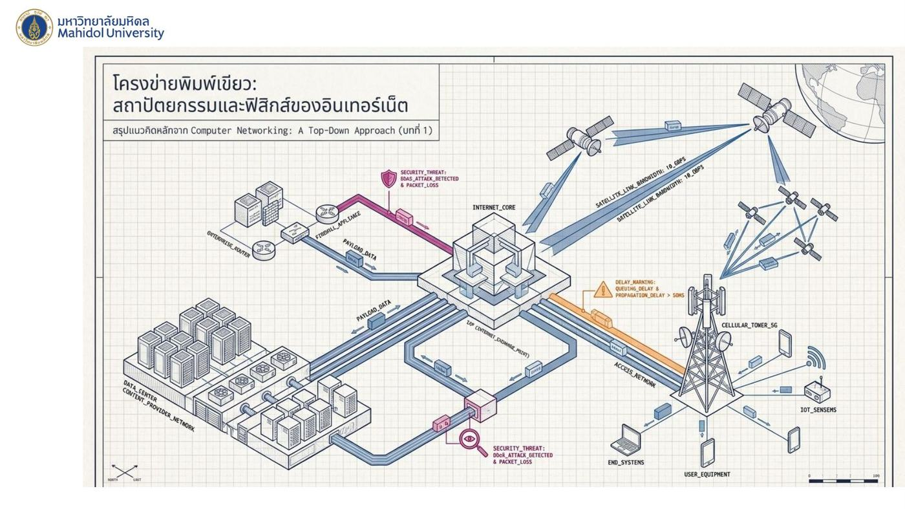
ภาพหน้าแรกรวมทุกส่วนไว้ในพิมพ์เขียวเดียว: Internet core ตรงกลาง, data center / content provider network, enterprise router + firewall, cellular tower 5G + IoT sensors + end systems, satellite links (10 Gbps), พร้อมป้ายเตือน security threat (DDoS attack, packet loss) และ delay warning (queuing delay & propagation delay)
1. End Systems และ Protocols
| ปลายทางของเครือข่าย (End Systems / Hosts) | กฎเกณฑ์ทางการทูตดิจิทัล (Protocols & Standards) |
|---|---|
| อุปกรณ์ทุกชนิดที่เชื่อมต่อกับอินเทอร์เน็ต ตั้งแต่เซิร์ฟเวอร์ขนาดใหญ่ไปจนถึงอุปกรณ์ IoT ถือเป็น Host หรือ End System ทั้งสิ้น | การสื่อสารต้องการ Protocol (เช่น HTTP, TCP) ซึ่งเปรียบเสมือน ธรรมเนียมปฏิบัติทางการทูต หากปราศจากมาตรฐาน (Standards) ที่กำหนดลำดับและรูปแบบ อุปกรณ์จากผู้ผลิตต่างค่ายจะไม่สามารถสื่อสารกันได้ (Interoperability) |
| ตัวอย่างในภาพ: Desktop PC, Smartphone, IoT sensor, Rack server ต่อผ่าน network backbone | ภาพแสดง 2 เครื่องที่มี TCP/IP stack ทำ alignment sequence, handshake (SYN/ACK), data exchange, security checkpoint, synchronization |
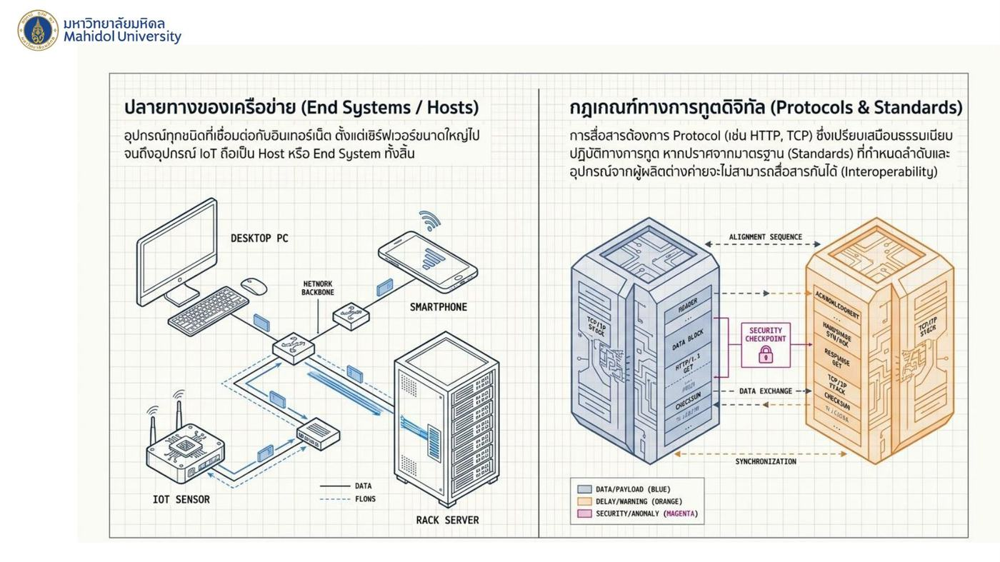
💡 Interoperability = การทำงานร่วมกันได้ข้ามยี่ห้อ เช่น iPhone ส่งไลน์หาเครื่อง Android ได้ เพราะทั้งคู่ทำตามโปรโตคอลเดียวกัน
2. เทคโนโลยีการเข้าถึงเครือข่าย (Access Networks Matrix) ⭐
| เทคโนโลยี | ประเภท | สื่อกลาง | การจัดสรรแบนด์วิดท์ | ความเร็วโดยประมาณ |
|---|---|---|---|---|
| FTTH | Home Access | Fiber Optic | Dedicated | 100 Mbps – 1 Gbps+ |
| HFC (Cable) | Home Access | Coaxial | Shared | 10s – 100s Mbps |
| DSL | Home Access | Copper Wire | Dedicated | <10 Mbps – 10s Mbps |
| Ethernet | Enterprise | Copper / Fiber | Dedicated | 10 Mbps – 100 Gbps |
| Wi-Fi | Home / Enterprise | Wireless (Unlicensed) | Shared | High speed, short range |
| 4G / 5G | Wide-Area | Wireless (Licensed) | Shared | Moderate speed, high mobility |
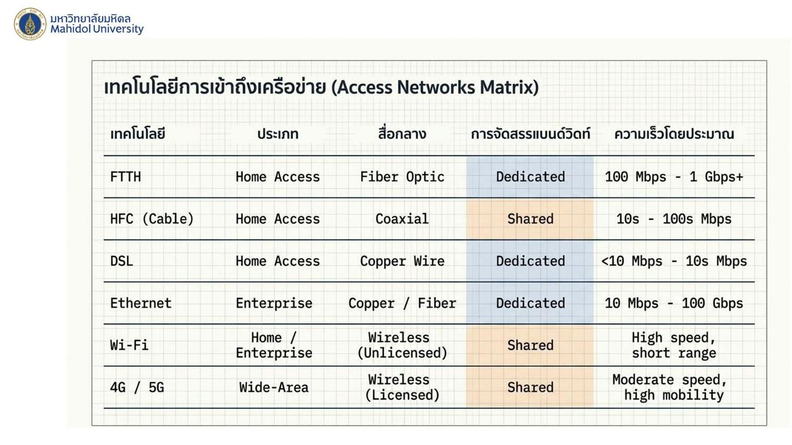
⚠️ Shared = HFC, Wi-Fi, 4G/5G / Dedicated = FTTH, DSL, Ethernet
💡 Wi-Fi ใช้คลื่น unlicensed (ใครก็ใช้ได้ไม่ต้องขอใบอนุญาต) ส่วน 4G/5G ใช้คลื่น licensed (ค่ายมือถือประมูลมา)
3. แกนกลางเครือข่าย: Circuit vs Packet Switching ⭐
| Circuit Switching | Packet Switching |
|---|---|
| รับประกันทรัพยากร (bandwidth) คงที่ตลอดการเชื่อมต่อ (dedicated path, แบ่งด้วย TDM slots) | แชร์ทรัพยากรร่วมกัน (store-and-forward, shared link) เหมาะกับข้อมูลที่มาเป็นระลอก (bursty) |
| ประสิทธิภาพ คาดการณ์ได้แน่นอน แต่ สูญเปล่าหากไม่มีการส่งข้อมูล | อนุญาตให้ผู้ใช้เข้าถึงเครือข่ายได้ มากกว่า แต่มี ความเสี่ยงเกิดคิวสะสม (queuing delay) |
| ตัวอย่าง: ลิงก์ 2 Mbps หากผู้ใช้ใช้คนละ 1 Mbps จะรองรับได้ สูงสุดเพียง 2 คนถ้วน | ตัวอย่าง: ลิงก์ 2 Mbps รองรับผู้ใช้ได้ มากกว่า 3 คน หากไม่ได้ส่งข้อมูลพร้อมกันตลอดเวลา |
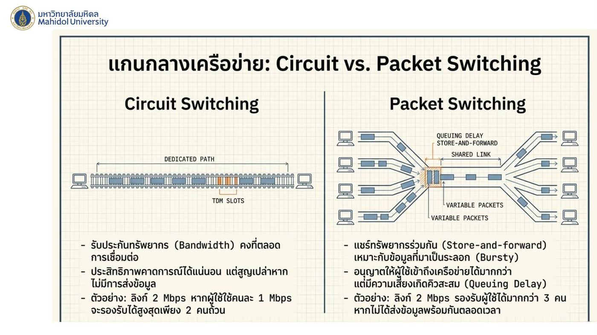
4. โครงสร้างพื้นฐานอินเทอร์เน็ต (Internet Backbone)
โครงสร้างเป็น พีระมิด: Tier-1 ISP (บนสุด) → Regional ISP → Access ISP (ล่างสุด)
- Peering เพื่อลดต้นทุน: ISP ระดับเดียวกันมักเชื่อมต่อกันเอง (peer) หรือผ่าน IXP เพื่อ หลีกเลี่ยงการจ่ายค่าผ่านทาง (transit fee) ให้ ISP ระดับบน
- Google's Private Network (Content Provider Network): ผู้ให้บริการเนื้อหารายใหญ่สร้างโครงข่ายส่วนตัวเชื่อมโยง data center ทั่วโลก เพื่อ ลดต้นทุนค่า transit และ นำข้อมูลเข้าใกล้ผู้ใช้ปลายทางมากที่สุด (ในภาพเป็นลูกศรที่พุ่งลงจากบนตรงถึงชั้นล่าง ข้ามลำดับชั้น)
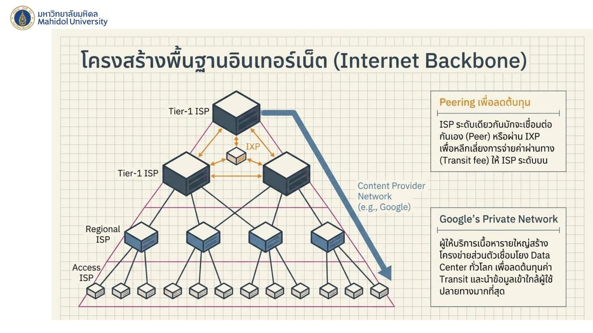
5. ฟิสิกส์ของเครือข่าย: ความหน่วง 4 ประเภท ⭐
$$d_{end\text{-}to\text{-}end} = d_{proc} + d_{queue} + d_{trans} + d_{prop}$$
| ประเภท | คงที่/แปรผัน | ความหมาย |
|---|---|---|
| Processing delay (d_proc) | คงที่ | เวลาตรวจสอบ header และตัดสินใจหาเส้นทาง |
| Queuing delay (d_queue) | แปรผัน | เวลารอในคิวหากทราฟฟิกหนาแน่น |
| Transmission delay (d_trans) | คงที่ | เวลาที่ใช้ดันบิตทั้งหมดของแพ็กเก็ตลงสู่สาย |
| Propagation delay (d_prop) | คงที่ | เวลาเดินทางของสัญญาณตามฟิสิกส์ของสื่อกลาง (ความเร็วแสง) |
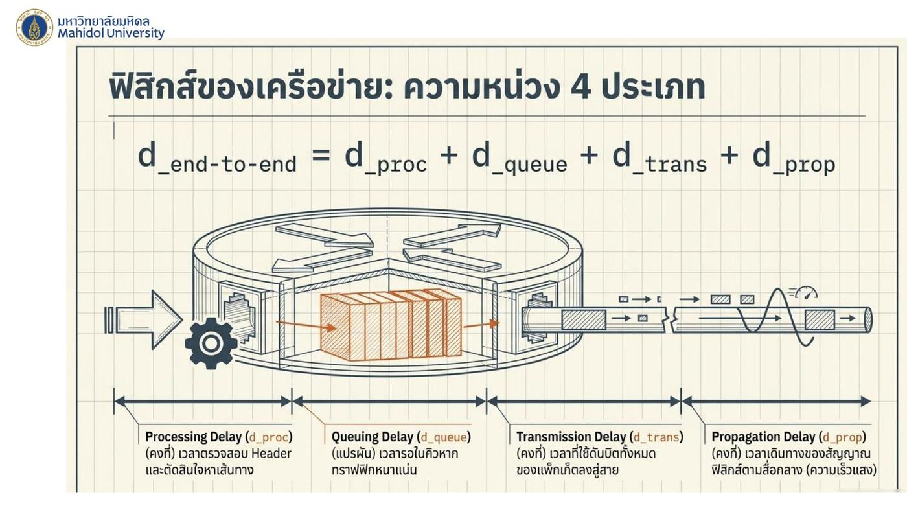
⚠️ ใน 4 ตัวนี้ queuing delay เป็นตัวเดียวที่แปรผัน ตามสภาพทราฟฟิก
6. Transmission vs Propagation ⭐
| Transmission Delay = L / R | Propagation Delay = d / s |
|---|---|
| L = ความยาวแพ็กเก็ต (bits), R = อัตราการส่ง/แบนด์วิดท์ (bps) | d = ระยะทาง (meters), s = ความเร็วสัญญาณ (~2.5×10⁸ m/s ในสไลด์นี้; Ch1 และโจทย์ใช้ 2×10⁸ m/s) |
| เปรียบเทียบ: เวลาที่ด่านเก็บเงินใช้ปล่อยรถทีละคันจนครบทั้งขบวน (สายพานส่งบิตออกจากด่าน) | เปรียบเทียบ: รถแข่งวิ่งจากจุด A ไป B |
| ขึ้นกับ ขนาดแพ็กเก็ต และ แบนด์วิดท์ | กฎเหล็ก: d_prop ไม่ขึ้นกับขนาดแพ็กเก็ต (L) หรือความเร็วอินเทอร์เน็ต (R) แต่ขึ้นกับ ระยะทางฟิสิกส์ล้วน ๆ |
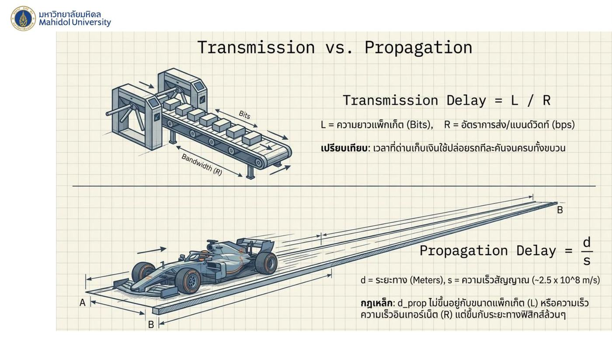
💡 ซื้อเน็ตแรงขึ้น (R สูงขึ้น) ลด d_trans ได้ แต่ ลด d_prop ไม่ได้ — ส่งข้อมูลไปอเมริกายังไงก็ต้องใช้เวลาเดินทางข้ามมหาสมุทรเท่าเดิม
7. ปริมาณข้อมูลและคอขวด (Throughput & The Bottleneck) ⭐
- Throughput แบบ end-to-end = อัตราที่ข้อมูลส่งถึงปลายทางได้สำเร็จ
- สูตร: Throughput = min(R1, R2, R3)
- ตัวอย่าง: Server → R1 = 2 Mbps → R2 = 100 kbps → R3 = 1 Mbps → Client ผลลัพธ์: แม้คุณจะมีอินเทอร์เน็ตแรง 2 Mbps แต่ถ้าลิงก์ระหว่างทางมีคอขวดที่ 100 kbps ความเร็วรวมจะถูกจำกัดที่ 100 kbps เท่านั้น
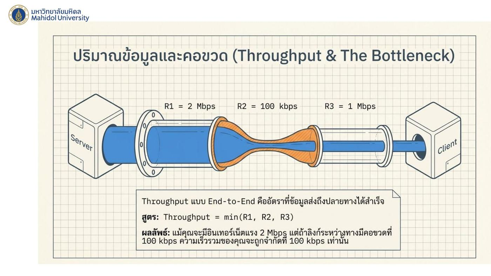
8. คิวและการสูญหายของข้อมูล (Queuing & Packet Loss) ⭐
Traffic Intensity: $$I = \frac{La}{R}$$ (L = ขนาดแพ็กเก็ต, a = อัตราแพ็กเก็ตที่เข้ามา, R = แบนด์วิดท์)
- กราฟ: queuing delay ต่ำเมื่อ I ≈ 0, เพิ่มขึ้นช้า ๆ ถึง 0.5 แล้ว พุ่งขึ้นชันเมื่อ I เข้าใกล้ 1 — บริเวณ I ≥ 1 เรียกว่า Unstable Region
- เมื่อ I > 1 ข้อมูลไหลเข้าเร็วกว่าที่ router จะระบายออกได้
- ผลที่ตามมา: คิวยาวขึ้นเรื่อย ๆ จนกระทั่ง router buffer เต็ม ทำให้แพ็กเก็ตใหม่ ถูกทิ้ง (dropped) เกิดเป็น Packet Loss
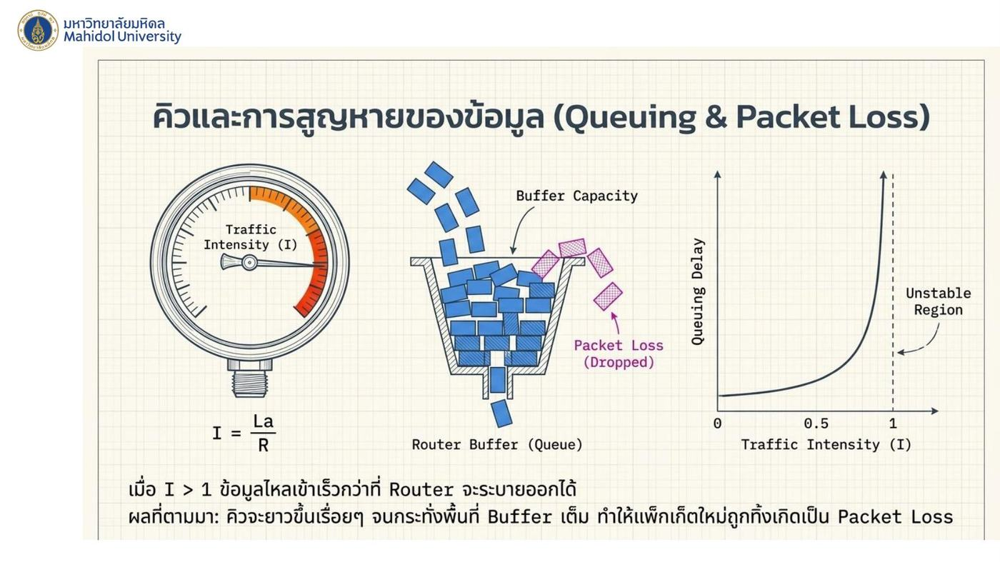
9. โจทย์คำนวณ Delay (พร้อมวิธีทำ) ⭐⭐
⚠️ ขั้นตอนสำคัญที่คนพลาดบ่อย: แปลงหน่วยก่อนเสมอ
- Bytes → bits: × 8
- Mbps → bps: × 10⁶ (1 Mbps = 1,000,000 bps)
- MB (ในโจทย์นี้) → bytes: × 10⁶
- km → m: × 1,000
- วินาที → ms: × 1,000
โจทย์ข้อ 1
เครื่องคอมพิวเตอร์ต้องการส่ง Packet ขนาด 4,000 บิต ผ่านสายสัญญาณที่มีความเร็ว 2 Mbps จงหาค่า Transmission Delay
วิธีคิด:
- แปลงหน่วยความเร็ว: R = 2 Mbps = 2 × 10⁶ bps = 2,000,000 bps
- แทนค่าในสูตร: $$D_{trans} = \frac{4{,}000 \text{ bits}}{2{,}000{,}000 \text{ bps}} = 0.002 \text{ s}$$
- คำตอบ: 2 ms
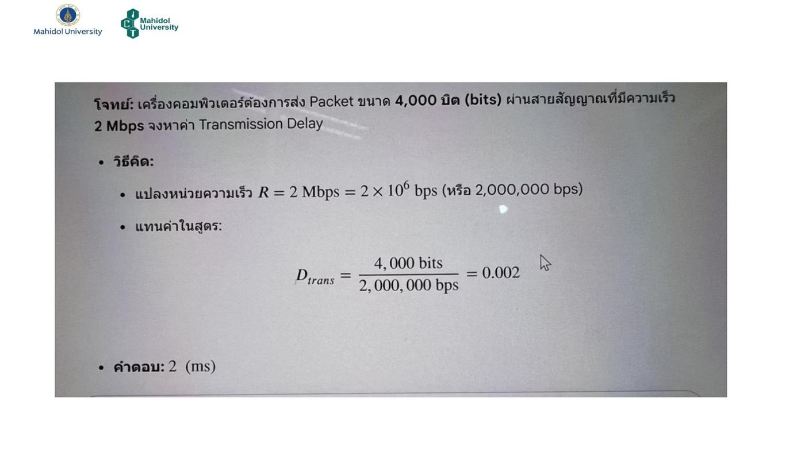
โจทย์ข้อ 2
โฮสต์ต้นทางต้องการส่งไฟล์รูปภาพขนาด 5 MegaBytes (MB) ผ่านสายเคเบิลแบบ Cable-based access (HFC) ที่มีความเร็วขาขึ้น (Upstream Rate) 10 Mbps จะใช้เวลาในการผลักข้อมูลลงสายสัญญาณเท่าใด
(คำว่า "ผลักข้อมูลลงสาย" = Transmission delay)
วิธีคิด:
- แปลงขนาดไฟล์ L จาก Bytes เป็น bits: L = 5 × 10⁶ × 8 = 40,000,000 bits
- แปลงหน่วยความเร็ว: R = 10 Mbps = 10,000,000 bps
- แทนค่าในสูตร: $$D_{trans} = \frac{40{,}000{,}000 \text{ bits}}{10{,}000{,}000 \text{ bps}} = 4$$
- คำตอบ: 4 วินาที
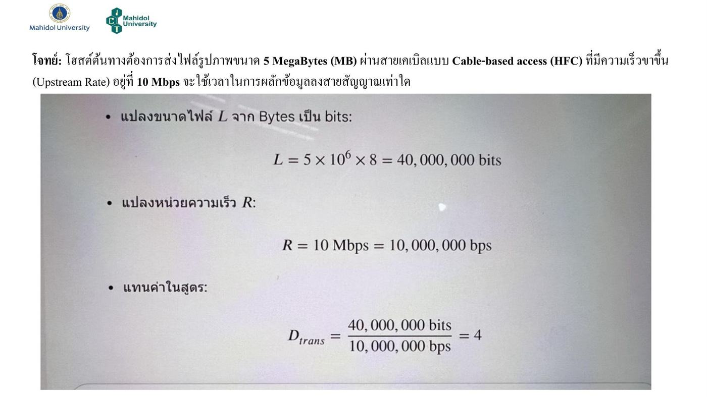
โจทย์ข้อ 3
คอมพิวเตอร์ A ส่งข้อมูลขนาด 1,000 Bytes ไปยัง Router ผ่านสายสัญญาณยาว 2,000 กิโลเมตร มีแบนด์วิดท์ 10 Mbps และสัญญาณเดินทางด้วยความเร็ว 2 × 10⁸ m/s จงหาค่า Transmission Delay และ Propagation Delay ว่าต่างกันอย่างไร
Transmission Delay (D_trans = L/R):
- แปลง L = 1,000 Bytes × 8 = 8,000 bits
- แปลง R = 10 Mbps = 10,000,000 bps
- คำนวณ: $$D_{trans} = \frac{8{,}000}{10{,}000{,}000} = 0.0008 \text{ s} = \mathbf{0.8 \text{ ms}}$$
Propagation Delay (D_prop = Distance/Speed):
- แปลงระยะทาง = 2,000 km = 2,000,000 m
- คำนวณ: $$D_{prop} = \frac{2{,}000{,}000 \text{ m}}{2 \times 10^8 \text{ m/s}} = 0.01 \text{ s} = \mathbf{10 \text{ ms}}$$
ต่างกันอย่างไร: ในโจทย์นี้ d_prop (10 ms) มากกว่า d_trans (0.8 ms) ถึง 12.5 เท่า เพราะสายยาวมาก (2,000 km) ขณะที่แพ็กเก็ตเล็กและแบนด์วิดท์สูง — d_trans ขึ้นกับขนาดแพ็กเก็ตและแบนด์วิดท์ ส่วน d_prop ขึ้นกับระยะทางเท่านั้น
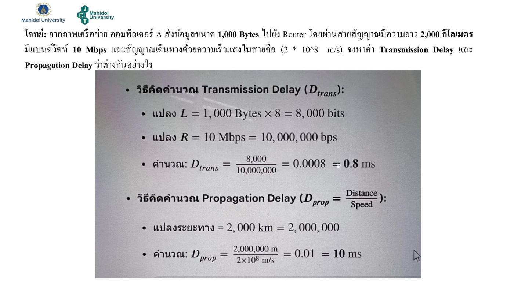
ตารางสรุปโจทย์:
| ข้อ | L | R / d | สูตร | คำตอบ |
|---|---|---|---|---|
| 1 | 4,000 bits | 2 Mbps | L/R | 2 ms |
| 2 | 5 MB = 40,000,000 bits | 10 Mbps | L/R | 4 s |
| 3 (trans) | 1,000 B = 8,000 bits | 10 Mbps | L/R | 0.8 ms |
| 3 (prop) | — | 2,000 km, 2×10⁸ m/s | d/s | 10 ms |
10. สถาปัตยกรรม 5 เลเยอร์ (The Protocol Stack) ⭐
| Layer | หน้าที่ | หน่วยข้อมูล |
|---|---|---|
| 5. Application | รองรับแอปพลิเคชันเครือข่าย (HTTP, SMTP, DNS) | Message |
| 4. Transport | ส่งข้อมูล โพรเซส-ต่อ-โพรเซส (TCP, UDP) | Segment |
| 3. Network | กำหนดเส้นทางจากต้นทางถึงปลายทาง (IP) | Datagram |
| 2. Link | เคลื่อนย้ายข้อมูลระหว่าง โหนดที่ติดกัน | Frame |
| 1. Physical | ส่งผ่านสัญญาณฟิสิกส์แต่ละบิตลงสื่อกลาง | Bits |
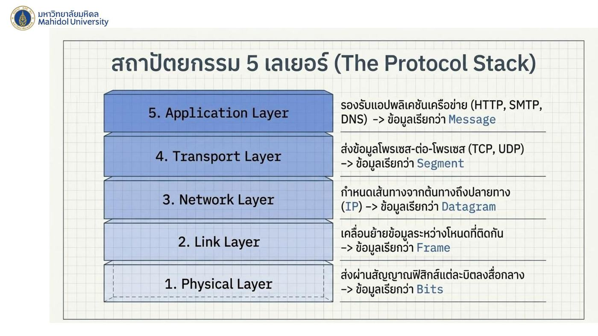
11. การห่อหุ้มข้อมูล (Encapsulation)
- Host A ห่อ payload ด้วย header ทีละชั้น (H4 = transport, H3 = network, H2 = link) แล้วส่งออก
- Link-layer Switch: แกะซองถึงแค่ชั้น Link (L2) (ดูแค่ H2)
- Router: แกะซองถึงชั้น Network (L3) เพื่อหา IP ปลายทาง (ดู H3) แล้วห่อ H2 ใหม่ส่งต่อ
- Host B แกะครบทุกชั้นจนได้ payload
💡 เปรียบเสมือนการเดินทางด้วยเครื่องบิน: การเช็คอินติดป้ายกระเป๋า (Header 1), ประตูขึ้นเครื่องตรวจ Boarding Pass (Header 2) — อุปกรณ์แกนกลางไม่ได้อ่านข้อมูลทั้งหมด แต่ละจุดดูเฉพาะป้ายที่ตัวเองรับผิดชอบ
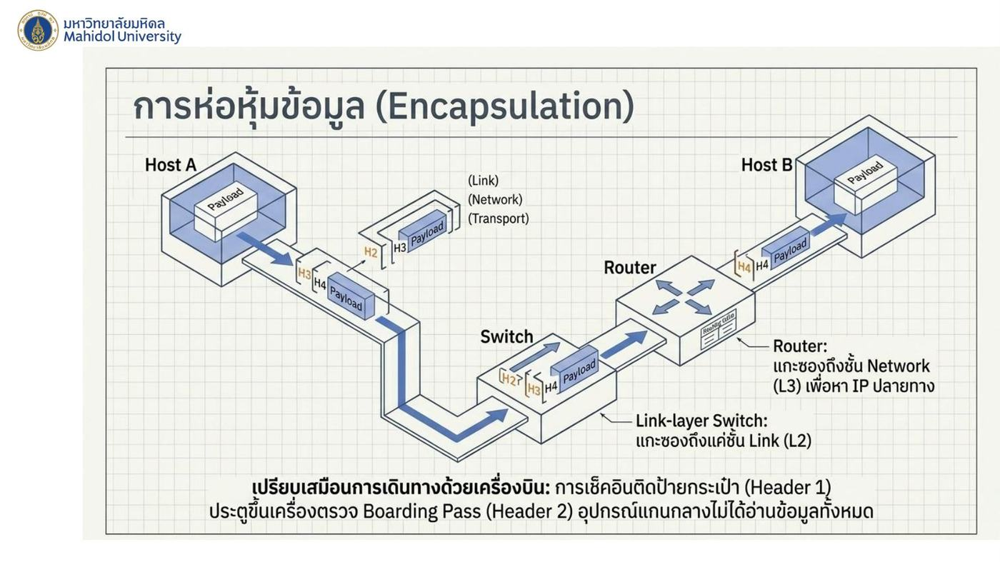
12. พลังของการแบ่งแพ็กเก็ต (Why Segmentation Matters) ⭐
การทดลอง: ส่งข้อความ 10⁶ บิต ผ่าน 3 ลิงก์ (แต่ละลิงก์ 5 Mbps)
กรณี A: ไม่แบ่งแพ็กเก็ต (store-and-forward ทั้งก้อน)
- ส่งผ่าน 1 ลิงก์ใช้ 10⁶ / (5 × 10⁶) = 0.2 วินาที
- ต้องรอรับครบทั้งก้อนก่อนส่งต่อ → Link 1 (0.2s) → Link 2 (0.2s) → Link 3 (0.2s)
- รวม 0.6 วินาที
กรณี B: แบ่งเป็น 100 แพ็กเก็ต แพ็กเก็ตละ 10⁴ บิต (pipelining)
- แต่ละแพ็กเก็ตใช้ 10⁴ / (5 × 10⁶) = 0.002 วินาทีต่อลิงก์
- แพ็กเก็ตแรกถึงปลายทางหลัง 3 × 0.002 = 0.006 s และแพ็กเก็ตถัด ๆ ไปตามมาทีละ 0.002 s (ไหลต่อกันเป็นท่อ ทุกลิงก์ทำงานพร้อมกัน)
- รวม = 0.006 + 99 × 0.002 = 0.204 วินาที
สรุป: สถาปัตยกรรม packet switching อาศัยการหั่นข้อมูลเป็นชิ้นเล็ก ๆ เพื่อทะลวงขีดจำกัดด้านความเร็วของเครือข่าย (เร็วขึ้นเกือบ 3 เท่า)
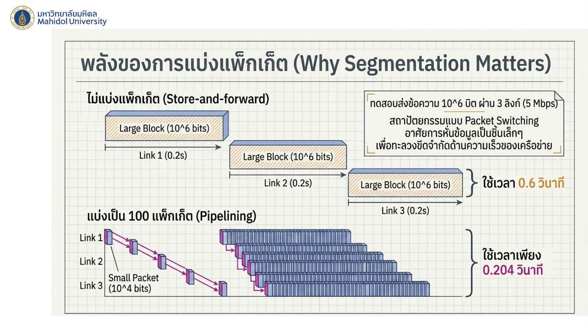
💡 เหมือนย้ายหนังสือ 100 เล่มผ่านคน 3 คนที่ยืนต่อแถว: ถ้ายกทีละลังใหญ่ คนที่ 2 กับ 3 ต้องยืนรอว่าง ๆ แต่ถ้าส่งทีละเล่ม ทุกคนได้ส่งต่อพร้อมกันตลอด
13. ภัยคุกคามเครือข่าย (Network Security Threats) ⭐
| ภัยคุกคาม | ลักษณะ |
|---|---|
| 1. Self-Replicating Malware | มัลแวร์ (เช่น Worms) ที่ แพร่กระจายและคัดลอกตัวเองไปยัง Host อื่น ๆ ที่มีช่องโหว่โดยอัตโนมัติ ไม่ต้องพึ่งพาการกระทำของผู้ใช้ |
| 2. Botnets & DDoS Attack | มัลแวร์ยึดครอง Host จำนวนมากให้กลายเป็น Bot รอคำสั่งจากศูนย์กลาง เพื่อส่ง ทราฟฟิกขยะปริมาณมหาศาล ไปถล่มเป้าหมายเดียวพร้อมกันจนระบบล่ม |
| 3. Man-in-the-Middle (MITM) | ผู้ไม่หวังดี (Trudy) แทรกตัวระหว่างการสื่อสาร (Alice ↔ Bob) เพื่อ ดักอ่าน ปลอมแปลง หรือแก้ไขข้อมูล ที่กำลังเดินทางผ่านลิงก์ |
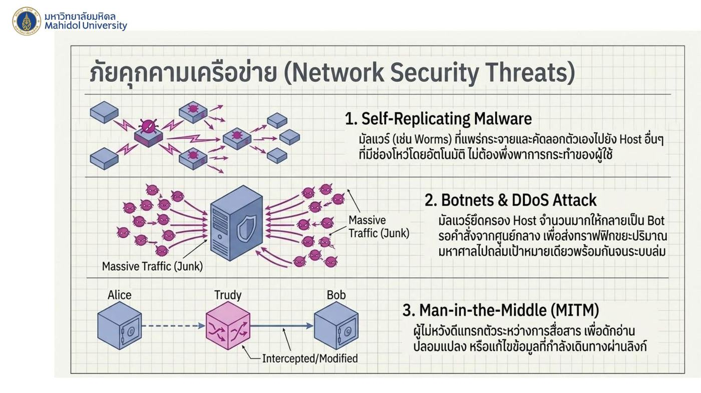
💡 ชื่อในตำรา security: Alice กับ Bob = คู่สื่อสารที่ดี, Trudy (intruder) = ผู้บุกรุก
14. บทสรุปภาพรวม (The Internet Blueprint)
เครือข่ายอินเทอร์เน็ตคือ สถาปัตยกรรมวิศวกรรมที่ซับซ้อนแต่น่าทึ่ง:
- ขับเคลื่อนโดย HOSTS ที่ขอบข่าย (edge)
- เชื่อมต่อด้วย PROTOCOLS ที่เป็นมาตรฐานสากล
- ข้อมูลถูกหั่นและห่อหุ้มผ่าน 5 LAYERS
- เดินทางแบบ PACKET SWITCHING ผ่านเราเตอร์ที่ต้องต่อสู้กับ 4 DELAYS (processing, queuing, transmission, propagation)
- เพื่อนำส่งข้อมูลจากมุมหนึ่งของโลกไปยังอีกมุมหนึ่งในเสี้ยววินาที
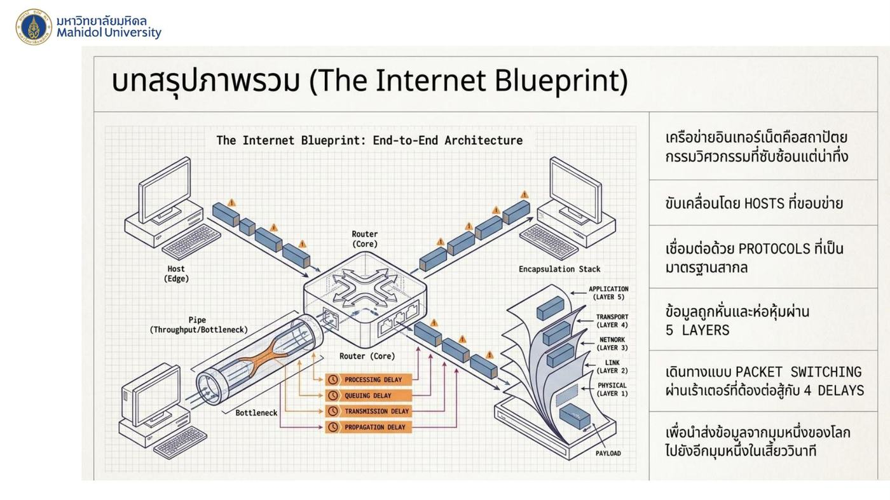
15. คำศัพท์และสูตรสำคัญ
| คำศัพท์ / สูตร | ความหมาย | จำง่าย ๆ ว่า |
|---|---|---|
| End system / Host | อุปกรณ์ทุกชนิดที่ต่ออินเทอร์เน็ต (รวม IoT) | |
| Interoperability | อุปกรณ์ต่างค่ายทำงานร่วมกันได้เพราะใช้มาตรฐานเดียวกัน | ภาษากลาง |
| Dedicated / Shared | แบนด์วิดท์เป็นของเราคนเดียว / แบ่งกับคนอื่น | |
| Licensed / Unlicensed spectrum | คลื่นที่ต้องได้รับอนุญาต (4G/5G) / ใช้ได้เสรี (Wi-Fi) | |
| Circuit switching | จองทรัพยากรคงที่ คาดการณ์ได้ แต่อาจสูญเปล่า | |
| Packet switching | แชร์ทรัพยากร รองรับคนมากกว่า แต่มี queuing delay | |
| Bursty | ข้อมูลมาเป็นระลอก | |
| Tier-1 / Regional / Access ISP | ลำดับชั้น ISP | |
| Peering / IXP | เชื่อมกันเองเพื่อไม่ต้องจ่าย transit fee | |
| Transit fee | ค่าผ่านทางที่จ่ายให้ ISP ระดับบน | |
| d_end-to-end = d_proc + d_queue + d_trans + d_prop | ความหน่วงรวม | queue แปรผันตัวเดียว |
| d_trans = L/R | ขนาดแพ็กเก็ต / แบนด์วิดท์ | ด่านเก็บเงิน |
| d_prop = d/s | ระยะทาง / ความเร็วสัญญาณ | รถแข่ง |
| Throughput = min(R1, R2, …) | ลิงก์ที่ช้าที่สุดกำหนดความเร็ว | คอขวด |
| I = La/R | Traffic intensity | > 1 = unstable, loss |
| Message / Segment / Datagram / Frame / Bits | หน่วยข้อมูลของ L5 / L4 / L3 / L2 / L1 | |
| Switch แกะถึง L2 / Router แกะถึง L3 | encapsulation กลางทาง | |
| Pipelining | แบ่งแพ็กเก็ตเล็กให้ทุกลิงก์ทำงานพร้อมกัน | 0.6 s → 0.204 s |
| Worm | มัลแวร์แพร่ตัวเองอัตโนมัติ | |
| Botnet / DDoS | เครือข่ายเครื่องที่ถูกยึด / ถล่มพร้อมกัน | |
| MITM | ดักกลางทาง อ่าน/แก้ข้อมูล (Trudy) |
16. สรุปท้ายบท / จุดที่มักออกสอบ
- Access networks matrix: FTTH/DSL/Ethernet = dedicated; HFC/Wi-Fi/4G-5G = shared; Wi-Fi unlicensed, 4G/5G licensed
- Circuit vs Packet: ลิงก์ 2 Mbps, คนละ 1 Mbps → circuit รับได้ 2 คน, packet รับได้มากกว่า 3 คน (ถ้าไม่ส่งพร้อมกันตลอด)
- Backbone: Tier-1 → Regional → Access; peering/IXP เลี่ยง transit fee; Google private network ข้ามลำดับชั้น
- 4 delays — queuing แปรผัน, อีก 3 ตัวคงที่
- d_trans = L/R vs d_prop = d/s — d_prop ไม่ขึ้นกับ L หรือ R
- Throughput = min (ตัวอย่าง 2 Mbps, 100 kbps, 1 Mbps → 100 kbps)
- I = La/R > 1 → คิวยาว buffer เต็ม packet loss
- ฝึกโจทย์ 3 ข้อ — จำการแปลงหน่วย (×8 สำหรับ bytes, ×10⁶ สำหรับ M) → 2 ms, 4 s, 0.8 ms vs 10 ms
- 5 layers + หน่วยข้อมูล (Message, Segment, Datagram, Frame, Bits)
- Encapsulation: switch ดูถึง L2, router ดูถึง L3
- Segmentation: 10⁶ bits, 3 ลิงก์ 5 Mbps → ไม่แบ่ง 0.6 s, แบ่ง 100 ชิ้น 0.204 s
- Threats: worm (แพร่เองอัตโนมัติ), botnet/DDoS, MITM